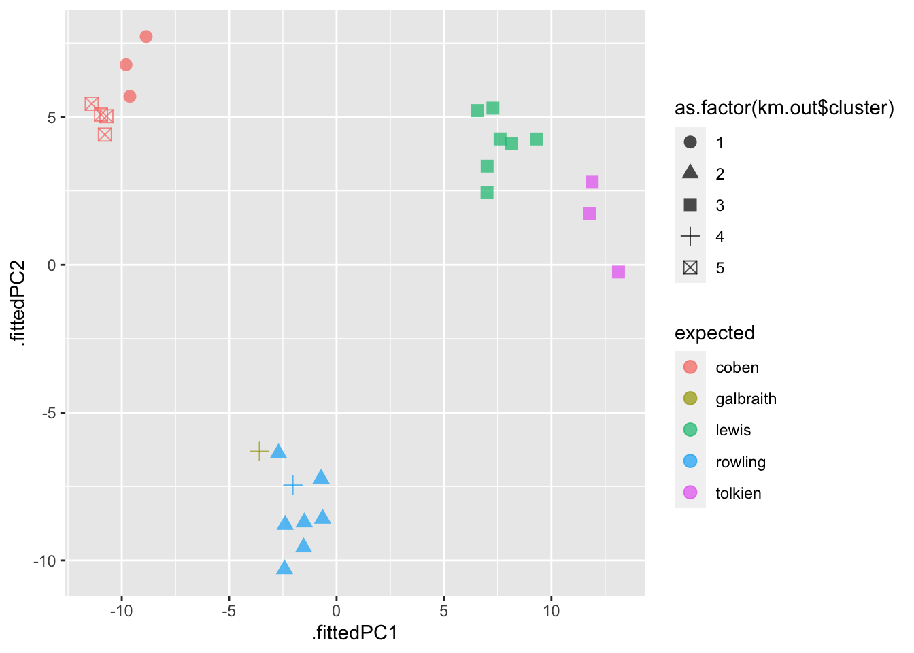
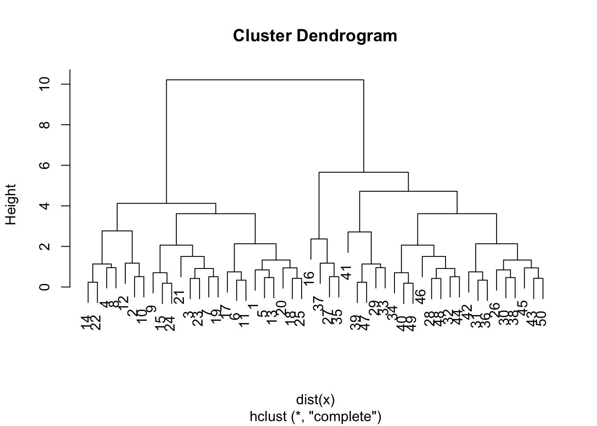
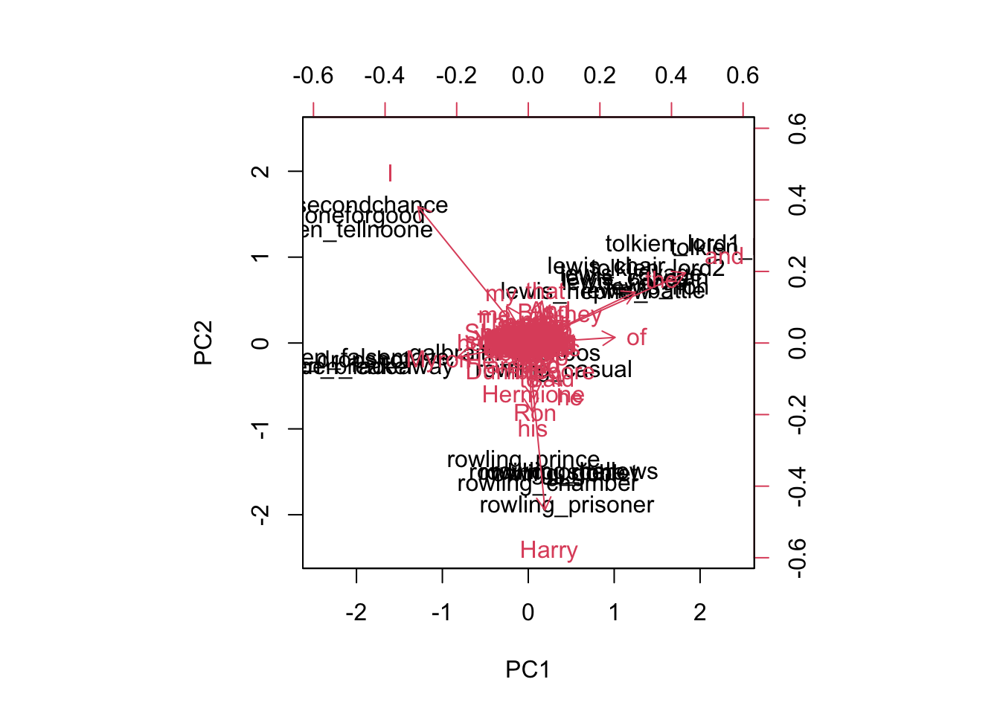
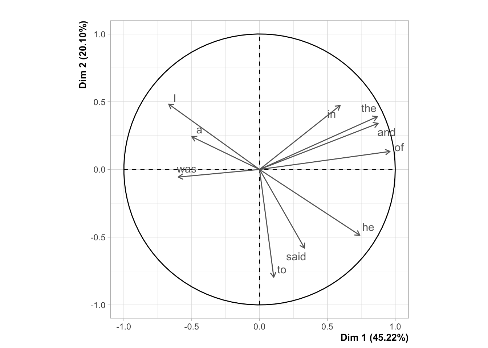
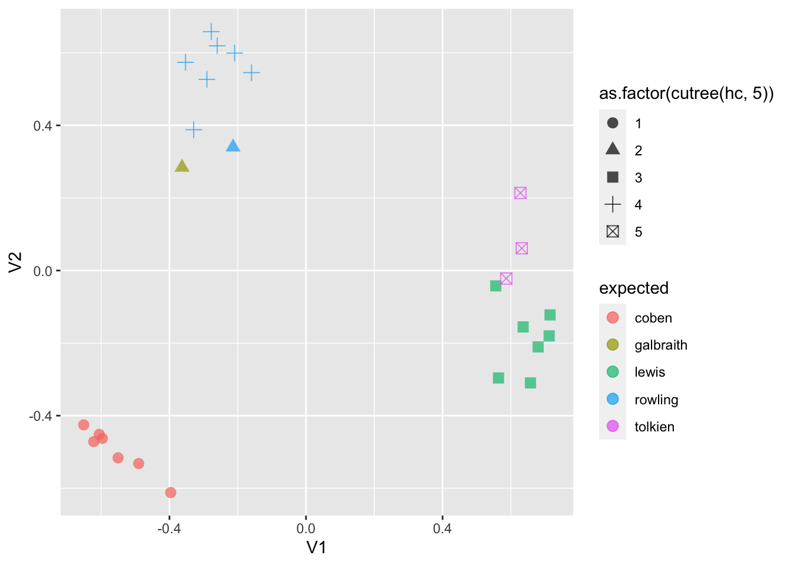

Тема 16 Сетевые данные и графы
Сети – это все, что окружает нас.
Люк (2017)
Любые сети состоят из отдельных участников (людей или вещей в сети) и отношений между ними. Сети очень часто визуализируются с помощью графов – структур, состоящих из множества точек и линий, отображающих связи между этими точками. Участники представлены в виде узлов сети, а их отношения представлены в виде линий, их связывающих54.
Пример исследования сетей соавторства на ФГН НИУ ВШЭ. Это исследование было предметом оживленной дискуссии, частично опубликованной на сайте ВШЭ.
16.1 Базовое описание
Мы начнем работу с сетями на небольшом датасете, опубликованном Якобом Морено в 1930-х гг. Этот датасет содержит сеть дружеских отношений между учениками 4-го класса.
library(network)
library(sna)
# devtools::install_github("DougLuke/UserNetR")
library(UserNetR)
data("Moreno")
summary(Moreno, print.adj = F)## Network attributes:
## vertices = 33
## directed = FALSE
## hyper = FALSE
## loops = FALSE
## multiple = FALSE
## bipartite = FALSE
## total edges = 46
## missing edges = 0
## non-missing edges = 46
## density = 0.08712121
##
## Vertex attributes:
##
## gender:
## numeric valued attribute
## attribute summary:
## Min. 1st Qu. Median Mean 3rd Qu. Max.
## 1.000 1.000 2.000 1.515 2.000 2.000
## vertex.names:
## character valued attribute
## 33 valid vertex names
##
## No edge attributes
Самая главная характеристика сети – это ее размер. Размер – это количество участников (members), которые называются узлами (nodes), вершинами (vertices) или акторами.
## [1] 33Еще одна важная характеристика сети – это ее плотность.
## [1] 0.08712121Плотность – это доля имеющихся связей по отношению к максимально возможному количеству связей. Формула плотности будет отличаться для направленных (\(\frac{L}{k(k - 1)}\)) и ненаправленных (\(\frac{2L}{k(k-1)}\)) сетей (где \(k(k-1)\) – это максимально возможное число связей).
Компонента сети – это подгруппа, где все акторы связаны между собой прямо или косвенно. На графе выше видно две компоненты.
Диаметр сети – количество шагов, которые нужно пройти, чтобы попасть из узла А в узел B; для сетей с несколькими компонентами учитывается та, что больше. Геодезическое расстояние – это кратчайший путь между двумя узлами; диаметром считается максимальное расстояние для двух узлов.
## [1] 11Коэффициент кластеризации, или транзитивность, отражает тенденцию к созданию закрытых треугольников, т.е. к замыканию. Транзитивность определяется как доля закрытых треугольников по отношению к общему количеству открытых и закрытых треугольников.
## [1] 0.285714316.2 Создание сетевых данных
16.2.1 Социоматрица
Матрица, хранящая информацию о сети, называется социоматрицей (или матрицей смежности). Ее можно создать вручную.
netmat1 <- rbind(c(0,1,1,0,0),
c(0,0,1,1,0),
c(0,1,0,0,0),
c(0,0,0,0,0),
c(0,0,1,0,0))
rownames(netmat1) <- letters[1:5]
colnames(netmat1) <- letters[1:5]
net1 <- network(netmat1, matrix.type ="adjacency")
class(net1)## [1] "network"## Network attributes:
## vertices = 5
## directed = TRUE
## hyper = FALSE
## loops = FALSE
## multiple = FALSE
## bipartite = FALSE
## total edges = 6
## missing edges = 0
## non-missing edges = 6
## density = 0.3
##
## Vertex attributes:
## vertex.names:
## character valued attribute
## 5 valid vertex names
##
## No edge attributes
##
## Network adjacency matrix:
## a b c d e
## a 0 1 1 0 0
## b 0 0 1 1 0
## c 0 1 0 0 0
## d 0 0 0 0 0
## e 0 0 1 0 0Функция gplot из пакета sna позволяет визуализировать эту матрицу в виде графа.

16.2.2 Список ребер
Ту же матрицу можно построить при помощи списка ребер. Списки ребер меньше по размеру, и собирать сетевые данные в таком формате проще.
netmat2 <- rbind(c(1,2),
c(1,3),
c(2,3),
c(2,4),
c(3,2),
c(5,3))
net2 <- network(netmat2, matrix.type = "edgelist")
network.vertex.names(net2) <- letters[1:5]
summary(net2)## Network attributes:
## vertices = 5
## directed = TRUE
## hyper = FALSE
## loops = FALSE
## multiple = FALSE
## bipartite = FALSE
## total edges = 6
## missing edges = 0
## non-missing edges = 6
## density = 0.3
##
## Vertex attributes:
## vertex.names:
## character valued attribute
## 5 valid vertex names
##
## No edge attributes
##
## Network adjacency matrix:
## a b c d e
## a 0 1 1 0 0
## b 0 0 1 1 0
## c 0 1 0 0 0
## d 0 0 0 0 0
## e 0 0 1 0 0Граф будет выглядеть точно так же.

16.2.3 Формула
Пакет igraph дает возможность создать сеть разными способами, в том числе с использованием формулы. Перед использованием пакета лучше отвязать statnet. Для ненаправленных графов используется --, для направленных -+.
## IGRAPH f047af2 UN-- 5 5 --
## + attr: name (v/c)
## + edges from f047af2 (vertex names):
## [1] a--c a--b c--b c--e b--dОбъекты igraph можно передать напрямую plot55, но ниже мы рассмотрим и другие возможности.

16.2.4 Импорт данных
Также данные можно импортировать. Мы воспользуемся датасетом, опубликованном на сайте Пушкинского дома, “Словарь русских писателей XVIII века: сеть персоналий”.
Датасет представляет собой осмысленные в терминах сетевого анализа междустатейные ссылки в Словаре русских писателей XVIII века (1988–2010. Вып. 1–3). Узлами сети выступают посвященные персоналиям статьи словаря, а ребрами — ссылки на другие статьи в том же словаре.
## # A tibble: 4,440 × 4
## Source Target Weight Type
## <chr> <chr> <dbl> <chr>
## 1 Н.И.Ахвердов П.И.Богданович 1 directed
## 2 А.Д.Байбаков А.А.Барсов 1 directed
## 3 А.Д.Кантемир А.К.Барсов 1 directed
## 4 А.Д.Кантемир С.С.Волчков 1 directed
## 5 А.Д.Кантемир И.И.Ильинский 1 directed
## 6 А.Д.Кантемир Ф.Кролик 1 directed
## 7 А.Д.Кантемир М.В.Ломоносов 1 directed
## 8 А.Д.Кантемир Е.Прокопович 1 directed
## 9 А.Д.Кантемир А.П.Сумароков 1 directed
## 10 А.Д.Кантемир В.К.Тредиаковский 1 directed
## # ℹ 4,430 more rowsЭту таблицу можно преобразовать в сеть несколькими способами. Функция graph_from_edgelist() ожидает на входе матрицу с двумя столбцами.
## IGRAPH 3d0f33e DN-- 780 4440 --
## + attr: name (v/c)Описание позволяет понять, что граф является направленным (D), а его узлы имеют имена (N). Всего в графе 780 вершин и 4440 связей. Демонстрационная версия интерактивного приложения, построенного на сетевых данных, размещена здесь. Приложение позволяет работать с отдельными узлами сети, изучать их соседей и количественные характеристики. Мы же выведем лишь небольшую часть узлов.
16.3 Атрибуты вершин (узлов)
В том же объекте-сети можно хранить дополнительные данные об узлах. В датасете “Словарь…” в качестве такого атрибута хранятся данные об имени автора:
## [1] "Н.И.Ахвердов" "П.И.Богданович" "А.Д.Байбаков" "А.А.Барсов"
## [5] "А.Д.Кантемир" "А.К.Барсов" "С.С.Волчков" "И.И.Ильинский"
## [9] "Ф.Кролик" "М.В.Ломоносов" "Е.Прокопович" "А.П.Сумароков"Атрибуты вершин можно использовать для того, чтобы задать новую подсеть для анализа. Например, выбрать только некоторых авторов из “Словаря…”.
vert <- which(names(V(dict_graph)) %in% c("Д.И.Фонвизин", "А.Д.Кантемир", "В.К.Тредиаковский", "Е.Р.Дашкова", "Н.М.Карамзин"))
dict_sub <- induced_subgraph(dict_graph,
vids = vert)
dict_sub## IGRAPH 76a87ff DN-- 5 8 --
## + attr: name (v/c)
## + edges from 76a87ff (vertex names):
## [1] А.Д.Кантемир ->В.К.Тредиаковский В.К.Тредиаковский->А.Д.Кантемир
## [3] В.К.Тредиаковский->Н.М.Карамзин В.К.Тредиаковский->Д.И.Фонвизин
## [5] Н.М.Карамзин ->В.К.Тредиаковский Д.И.Фонвизин ->В.К.Тредиаковский
## [7] Д.И.Фонвизин ->Н.М.Карамзин Д.И.Фонвизин ->Е.Р.Дашкова16.4 Фильтрация по узлу
Для визуализации таких объектов подходит функция ggraph() из одноименного пакета, которая основана на грамматике ggplot.
library(ggraph)
names <- names(V(dict_sub))
ggraph(dict_sub, layout = "fr") +
geom_edge_link(color = "cadetblue3") +
geom_node_point(size = 5, color = "bisque4", shape = 18) +
geom_node_text(aes(label = names), nudge_y = -0.1) +
theme_graph()
Немного баловства (но лучше, конечно, другие картинки использовать).
##
## Attaching package: 'ggimage'## The following object is masked from 'package:cowplot':
##
## theme_nothing## получаем координаты
subgraph.layout <- layout.fruchterman.reingold(dict_sub)
x <- subgraph.layout[,1]
y <- subgraph.layout[,2]
ggraph(dict_sub, layout = subgraph.layout) +
geom_edge_link(color = "cadetblue3") +
geom_pokemon(aes(x, y), image="pikachu", size = 0.2) +
geom_node_text(aes(label = names), nudge_y = -0.1) +
theme_graph()Теперь выберем отдельный узел вместе с его соседями.
vert <- which(names(V(dict_graph))=="А.Д.Кантемир")
dict_sub <- induced_subgraph(dict_graph,
vids = c(vert, neighbors(dict_graph, "А.Д.Кантемир")))## IGRAPH 380b850 DN-- 9 30 --
## + attr: name (v/c)
## + edges from 380b850 (vertex names):
## [1] А.Д.Кантемир ->А.К.Барсов А.Д.Кантемир ->С.С.Волчков
## [3] А.Д.Кантемир ->И.И.Ильинский А.Д.Кантемир ->Ф.Кролик
## [5] А.Д.Кантемир ->М.В.Ломоносов А.Д.Кантемир ->Е.Прокопович
## [7] А.Д.Кантемир ->А.П.Сумароков А.Д.Кантемир ->В.К.Тредиаковский
## [9] А.К.Барсов ->Е.Прокопович С.С.Волчков ->М.В.Ломоносов
## [11] С.С.Волчков ->В.К.Тредиаковский Ф.Кролик ->А.Д.Кантемир
## [13] Ф.Кролик ->Е.Прокопович М.В.Ломоносов->С.С.Волчков
## [15] М.В.Ломоносов->А.П.Сумароков М.В.Ломоносов->В.К.Тредиаковский
## + ... omitted several edgesИспользуем другую укладку, также повернем и сдвинем подписи.
names <- names(V(dict_sub))
ggraph(dict_sub, layout = "linear") +
geom_edge_arc(color = "cadetblue3") +
geom_node_point(size = 5, color = "bisque4", shape = 18) +
geom_node_text(aes(label = names), angle = 60, nudge_x = 0.1, nudge_y = -0.1) +
theme_graph()
16.5 Атрибуты ребер
В данных из “Словаря…” у ребер нет атрибутов, в чем легко убедиться.
## list()В некоторых случаях бывает полезно эти атрибуты назначить: например, если вы провели дополнительное исследование и хотите добавить данные.
set.seed(1234)
dict_sub <- set_edge_attr(dict_sub, "value", index = E(dict_sub), value = sample(1:3, length(E(dict_sub)), replace = T))Назначенный атрибут (сейчас это случайное число) можно закодировать на графе:
ggraph(dict_sub, layout = "linear") +
geom_edge_arc(aes(width = value), color = "cadetblue3", alpha = 0.5) +
geom_node_point(size = 5, color = "bisque4", shape = 18) +
geom_node_text(aes(label = names), angle = 60, nudge_x = 0.1, nudge_y = -0.1) +
theme_graph()
16.6 Импорт из gexf
Датасет “«Камер-фурьерский журнал» В. Ходасевича” хранит информацию о встречах, которые В. Ходасевич фиксировал в своем камер-фурьерском журнале, начиная с 1922 года. Данные за каждый месяц хранятся отдельно в файлах формата gexf (Graph Exchange XML Format)), для их чтения нужен особый пакет.
## <?xml version="1.0" encoding="UTF-8"?>
## <gexf xmlns="http://www.gexf.net/1.1draft" xmlns:viz="http://www.gexf.net/1.1draft/viz" xmlns:xsi="http://www.w3.org/2001/XMLSchema-instance" version="1.1" xsi:schemaLocation="http://www.w3.org/2001/XMLSchema-instance">
## <graph defaultedgetype="undirected" mode="static">
## <nodes>
## <node id="Туся" label="Туся"/>
## <node id="Минский" label="Минский"/>
## <node id="Шаляпин" label="Шаляпин"/>
## <node id="Женя" label="Женя"/>
## <node id="Толстой" label="Толстой"/>
## <node id="Эренбург" label="Эренбург"/>
## <node id="Нина" label="Нина"/>
## <node id="Белый" label="Белый"/>
## <node id="Добровейн" label="Добровейн"/>
## <node id="Горький" label="Горький"/>
## <node id="Феррари" label="Феррари"/>
## <node id="Ася" label="Ася"/>
## <node id="Парнах" label="Парнах"/>
## <node id="Кусиков" label="Кусиков"/>
## <node id="Зайцева_В" label="Зайцева_В"/>
## <node id="Залшупин" label="Залшупин"/>
## <node id="Кречетов" label="Кречетов"/>
## <node id="Шкловский" label="Шкловский"/>
## <node id="Каплун_Б" label="Каплун_Б"/>
## <node id="Берберов_Л" label="Берберов_Л"/>
## <node id="Венгерова" label="Венгерова"/>
## <node id="Маковский" label="Маковский"/>
## <node id="Рындина" label="Рындина"/>
## <node id="Багратион-Мухранская" label="Багратион-Мухранская"/>
## <node id="Цветаева" label="Цветаева"/>
## <node id="Ященко" label="Ященко"/>
## <node id="Юренева" label="Юренева"/>
## <node id="Дроздов" label="Дроздов"/>
## <node id="Горный" label="Горный"/>
## <node id="Григорович" label="Григорович"/>
## <node id="Берберов" label="Берберов"/>
## <node id="Вишняк" label="Вишняк"/>
## <node id="Постников" label="Постников"/>
## <node id="Пуни" label="Пуни"/>
## <node id="Слоним" label="Слоним"/>
## <node id="Амфитеатров" label="Амфитеатров"/>
## <node id="Зайцев_Б" label="Зайцев_Б"/>
## <node id="Пешков_М" label="Пешков_М"/>
## <node id="Алянский" label="Алянский"/>
## <node id="Андреева" label="Андреева"/>
## <node id="Каплун" label="Каплун"/>
## <node id="Ракицкий" label="Ракицкий"/>
## ...
## </nodes>
## <edges>
## <edge id="0" source="Туся" target="Толстой" weight="1"/>
## <edge id="1" source="Минский" target="Кусиков" weight="1"/>
## <edge id="2" source="Минский" target="Юренева" weight="1"/>
## <edge id="3" source="Минский" target="Эренбург" weight="1"/>
## <edge id="4" source="Минский" target="Шкловский" weight="1"/>
## <edge id="5" source="Минский" target="Постников" weight="1"/>
## ...
## </edges>
## </graph>
## </gexf>Трансформируем в формат igraph.
## IGRAPH 041f9bd UNW- 42 86 --
## + attr: layout (g/n), name (v/c), color (v/c), size (v/n), weight (e/n)
## + edges from 041f9bd (vertex names):
## [1] Толстой --Туся Кусиков --Минский
## [3] Минский --Юренева Минский --Эренбург
## [5] Минский --Шкловский Минский --Постников
## [7] Венгерова --Минский Минский --Пуни
## [9] Багратион-Мухранская--Шаляпин Парнах --Шаляпин
## [11] Горький --Шаляпин Кречетов --Шаляпин
## [13] Пешков_М --Шаляпин Добровейн --Шаляпин
## [15] Ракицкий --Шаляпин Женя --Нина
## + ... omitted several edgesВ данном случае U означает ненаправленный граф, а N говорит о том, что вершины имеют имена. Буква W указывает на то, что ребрам присвоены веса. Далее приводится информация о количестве вершин (42) и ребер (86).
Заглянем в атрибуты.
## + 42/42 vertices, named, from 041f9bd:
## [1] Алянский Амфитеатров Андреева
## [4] Ася Багратион-Мухранская Белый
## [7] Берберов Берберов_Л Венгерова
## [10] Вишняк Горный Горький
## [13] Григорович Добровейн Дроздов
## [16] Женя Зайцев_Б Зайцева_В
## [19] Залшупин Каплун Каплун_Б
## [22] Кречетов Кусиков Маковский
## [25] Минский Нина Парнах
## [28] Пешков_М Постников Пуни
## + ... omitted several verticesСохраним имена узлов как вектор.
Зачем-то в объекте хранится еще и цвет узлов (один для всех).
## [1] "#FF6347FF" "#FF6347FF" "#FF6347FF" "#FF6347FF" "#FF6347FF" "#FF6347FF"
## [7] "#FF6347FF" "#FF6347FF" "#FF6347FF" "#FF6347FF" "#FF6347FF" "#FF6347FF"
## [13] "#FF6347FF" "#FF6347FF" "#FF6347FF" "#FF6347FF" "#FF6347FF" "#FF6347FF"
## [19] "#FF6347FF" "#FF6347FF" "#FF6347FF" "#FF6347FF" "#FF6347FF" "#FF6347FF"
## [25] "#FF6347FF" "#FF6347FF" "#FF6347FF" "#FF6347FF" "#FF6347FF" "#FF6347FF"
## [31] "#FF6347FF" "#FF6347FF" "#FF6347FF" "#FF6347FF" "#FF6347FF" "#FF6347FF"
## [37] "#FF6347FF" "#FF6347FF" "#FF6347FF" "#FF6347FF" "#FF6347FF" "#FF6347FF"Атбрибуты ребер.
## [1] 1 1 1 1 1 1 3 1 1 1 1 1 1 1 1 2 1 1 1 1 1 2 1 1 1 1 1 1 1 1 1 2 1 1 1 1 1 1
## [39] 1 1 1 1 1 1 1 1 1 1 1 1 1 1 1 1 1 1 1 2 1 1 1 1 1 1 1 1 1 1 1 1 1 1 3 1 1 1
## [77] 1 1 1 1 1 1 1 1 1 116.7 Визуализация с ggraph
Ширину ребра отрегулируем в зависимости от веса, который отражает частоту контактов. Мы уже видели, что эти данные хранятся в атрибутах ребер. Функция as.factor препятствует дроблению чисел, т.к. в нашем случае это не имеет смысла.
ggraph(kfj_graph) +
geom_edge_link(alpha = 0.25,
aes(width = as.factor(weight)),
show.legend = F) +
geom_node_point(color = color, show.legend = F, size = 2) +
geom_node_text(aes(label = names), repel = TRUE) +
theme_graph()
16.8 Фильтрация по атрибутам ребер
Атрибуты ребер, как и атрибуты имен, можно использовать для создания подсети. Например, мы можем отобрать только имена тех людей, с которыми Ходасевич встречался больше одного раза в месяц (это август 1922 г.).
## + 6/86 edges from 041f9bd (vertex names):
## [1] Венгерова--Минский Женя --Нина Женя --Шкловский
## [4] Ася --Нина Зайцев_Б --Зайцева_В Берберов --Берберов_ЛВизуализируем подсеть. Цветовая раскраска в данном случае ничего не добавляет, просто показываю красивое. Подписи можно добавить не только к узлам, но и к ребрам.
kfj_sub <- subgraph.edges(kfj_graph, E(kfj_graph)[weight > 1])
names_sub <- get.vertex.attribute(kfj_sub)$name
weight_sub <- get.edge.attribute(kfj_sub)$weight
ggraph(kfj_sub, layout = "kk") +
geom_edge_link(alpha = 0.25,
linetype = 2,
aes(label = weight_sub),
label_colour = "sienna",
label_dodge = unit(2.5, 'mm'),
angle_calc = 'along') +
geom_node_point(size = 3, aes(color = names_sub), show.legend = F) +
geom_node_text(aes(label = names_sub), repel = TRUE) +
theme_graph()16.9 Укладка сети
Графическое представление одной и той же сети будет зависеть от выбранного способа укладки.
При построении графиков сетей стремятся следовать следующим принципам:
- минимизировать пересечения ребер;
- максимизировать симметричность укладки узлов;
- минимизировать изменчивость длины ребер;
- максимизировать угол между ребрами, когда они пересекают или соединяют узлы;
- минимизировать общее пространство для вывода сети.

Для автоматического построения укладок разработано большое количество методов. В пакете igraph для каждого есть особая функция:
- layout_randomly
- layout_in_circle
- layout_on_sphere
- layout_with_drl (Distributed Recursive Layout)
- layout_with_fr (Fruchterman-Reingold)
- layout_with_kk (Kamada-Kawai)
- layout_with_lgl (Large Graph Layout)
- layout_as_tree (Reingold-Tilford)
- layout_nicely
Можно выбрать укладку, не вызывая отдельную функцию:
ggraph(kfj_graph, layout = "kk") +
geom_edge_link(alpha = 0.25) +
geom_node_point(color = color, show.legend = F, size = 2) +
geom_node_text(aes(label = names), repel = TRUE) +
theme_graph()
Поменяем укладку и цвета:
ggraph(kfj_graph, layout = "fr") +
geom_edge_link(aes(color = "sienna"),
show.legend = F) +
geom_node_point(size = 2, color = "olivedrab") +
geom_node_text(aes(label = names), repel = TRUE, color = "grey30") +
theme_graph()
Не все укладки одинаково хороши.
ggraph(kfj_graph, layout = "linear", circular = T) +
geom_edge_arc(aes(color = "sienna"),
show.legend = F) +
geom_node_point(size = 2, color = "olivedrab") +
geom_node_text(aes(label = names), repel = TRUE, color = "grey30") +
theme_graph()
Подробнее см.: https://www.data-imaginist.com/2017/ggraph-introduction-edges/